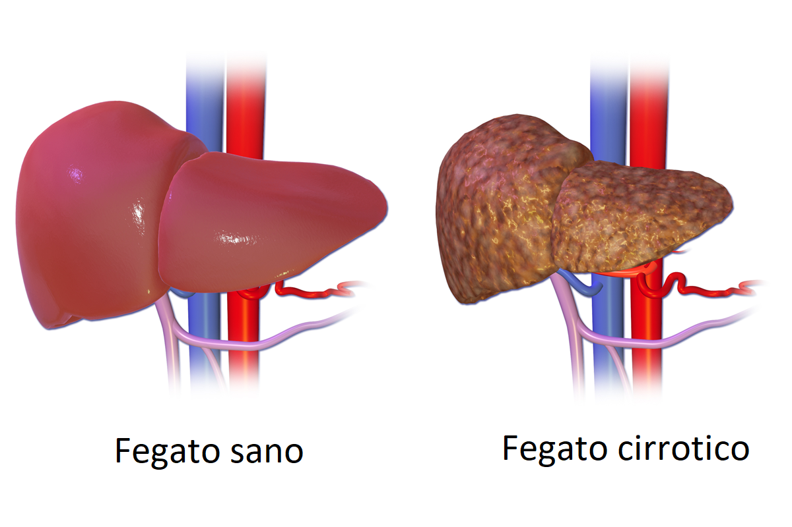
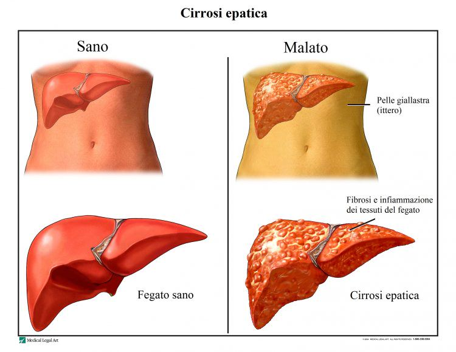

EFFETTI DELL'ALCOL SUL NOSTRO CORPO
L'alcol può aumentare il rischio di malattie epatiche e può causare infiammazione del fegato. La predisposizione genetica, la dieta e il peso influenzano il rischio di quest'ultime; inoltre è consigliabile limitare il consumo di alcol a 14 unità settimanali per ridurre i rischi per la salute perchè il fegato ne può metabolizzare solo una quantità limitata per ora. Il restante alcol rimane nel flusso sanguigno, influenzando tutti gli altri organi.
Le principali malatti a cui si va incontro con un eccessivo consumo di alcol sono:
La streatosi epatica: si riferisce ad un accumulo di grasso nelle cellule del fegato causate appunto dal consumo cronico di alcol altera il metabolismo dei lipidi, portando all’accumulo di trigliceridi.
La cirrosi epatica: è una sostituzione del tessuto che ricopre il fegato che compromette le sue funzioni prinipali. La cirrosi, al contrario della streatosi, è uno stadio irreversibile del danno epatico.
 